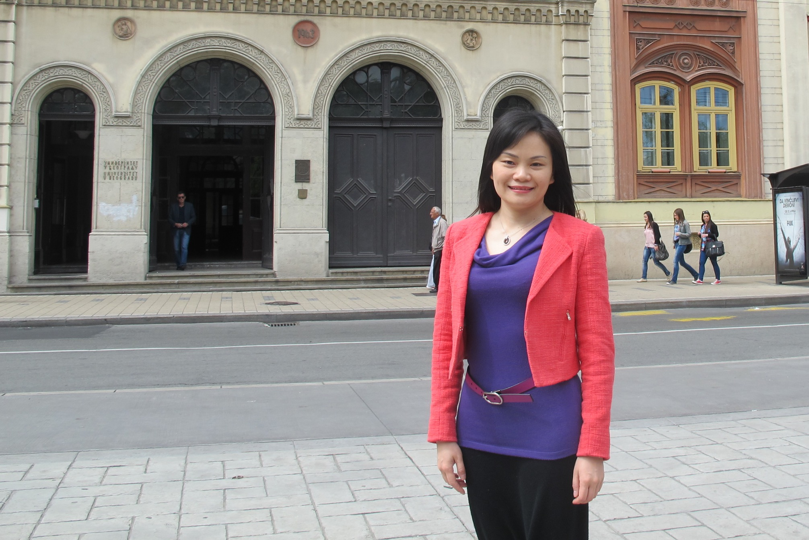

基本信息

上海大学计算机工程与科学学院副教授，博士生导师，中国计算机学会高级会员，中国计算机学会生物信息学专委会委员，中国计算机学会分布式计算与系统专业委员会常务委员，上海市计算机学会生物信息学专委会秘书长。
谢江是国家自然科学基金面上项目主持人，上海市自然科学基金主持人，是科技部重大研发计划重点专项子课题责任人，国家自然科学基金重大研究计划培育项目和上海市科委重点资助项目课题骨干，在包括IEEE Transactions on Computational Biology and Bioinformatics, Scientific Reports, Biomaterials等期刊和IEEE E-Science、IEEE/WIC/ACM国际重要学术会议上发表了一系列论文（近十年以来以第一/通讯作者发表49篇），获得发明专利3项，软件著作权3项。课题组已有四名国家级奖学金获得者，一名光华奖学金获得者和多名上海市优秀毕业生。